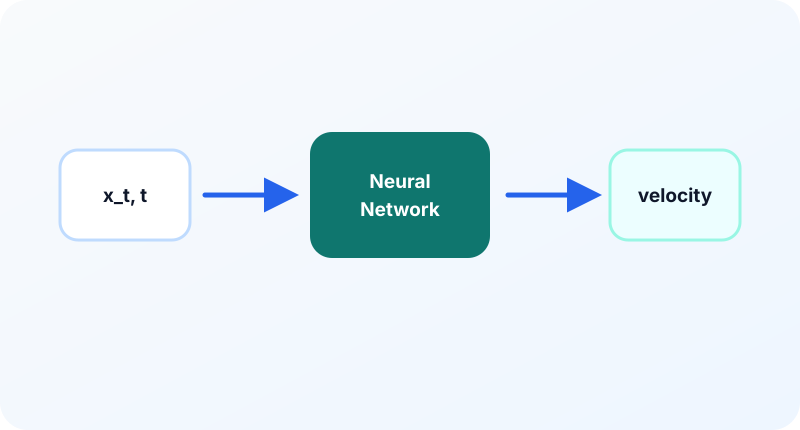

10장. 2차원 Toy Example로 Flow Matching 실습하기¶
이 장의 질문¶
수식으로는 Flow Matching을 이해한 것 같지만, 실제로 점들이 어떻게 움직이는지는 아직 막연할 수 있다. 2차원 toy example을 만들면 분포, 경로, 속도장, ODE(Ordinary Differential Equation, 상미분방정식) sampling을 눈으로 확인할 수 있다. 복잡한 이미지 모델로 가기 전에 작은 평면에서 모든 개념을 검증해 보자.
이 장은 실습 중심이다. 목표는 고성능 모델을 만드는 것이 아니라 Flow Matching의 구성 요소가 실제 코드에서 어떻게 만나는지 확인하는 것이다. 2차원 데이터는 시각화가 쉽고, 실패 원인도 눈으로 파악하기 좋다.
왜 2차원부터 시작하는가¶
이미지 데이터는 차원이 크다. 모델이 실패했을 때 원인이 경로인지, 네트워크인지, normalization인지, sampler인지 구분하기 어렵다. 반면 2차원 데이터는 모든 샘플을 산점도로 볼 수 있다.
2차원 실습에서 확인할 수 있는 것은 다음과 같다.
- \(p_0\)에서 뽑은 노이즈 점들의 모양
- \(p_1\) 데이터 점들의 모양
- 중간 \(x_t\)의 분포 변화
- 모델이 예측한 velocity field
- ODE를 따라 이동한 샘플의 trajectory
- step 수에 따른 샘플 품질 변화
이것들은 나중에 이미지 모델로 넘어가도 그대로 유지되는 핵심 개념이다.
데이터 분포 선택¶
toy data로는 다음 예제가 좋다.
- 두 개의 반달 모양
- 여러 개의 가우시안 모드
- 원형 분포
- 나선형 분포
입문 단계에서는 두 개의 반달 모양이 좋다. 단순한 정규분포와 모양이 확실히 달라서 분포 이동이 눈에 잘 보인다.
데이터 분포를 \(p_1\)이라고 하자.
시작 분포는 표준 정규분포로 둔다.
직선 경로 실습¶
가장 단순한 경로는 직선 보간이다.
목표 속도는
이 식을 사용하면 path sampler는 매우 간단하다. 입력은 \(x_0\), \(x_1\), \(t\)이고 출력은 \(x_t\), \(u_t\)다.
def sample_path(x0, x1, t):
t_view = t[:, None]
xt = (1 - t_view) * x0 + t_view * x1
ut = x1 - x0
return xt, ut
2차원에서는 \(t_view\)의 shape가 \(B\times 1\)이면 충분하다. 이미지에서는 \(B\times 1\times 1\times 1\)이 필요했지만 원리는 같다.
작은 MLP(Multi-Layer Perceptron, 다층 퍼셉트론) 모델¶
2차원 실습에서는 큰 U-Net(인코더-디코더형 convolution network)이 필요 없다. 입력은 \(x_t\in\mathbb{R}^2\)와 시간 \(t\)이고, 출력은 속도 \(v_\theta(x_t,t)\in\mathbb{R}^2\)다.
가장 단순하게는 \(x_t\)와 \(t\)를 concatenate해서 MLP(Multi-Layer Perceptron, 다층 퍼셉트론)에 넣을 수 있다.
모델은 다음 함수를 근사한다.
시간 임베딩을 더 정교하게 만들 수도 있지만, toy example에서는 먼저 단순한 입력 결합으로 충분하다.
학습 루프¶
학습 루프는 CFM(Conditional Flow Matching) loss의 구조를 그대로 따른다.
for step in range(num_steps):
x1 = sample_data(batch_size)
x0 = torch.randn_like(x1)
t = torch.rand(batch_size, device=x1.device)
xt, ut = sample_path(x0, x1, t)
pred = model(xt, t)
loss = ((pred - ut) ** 2).mean()
optimizer.zero_grad()
loss.backward()
optimizer.step()
이 실습에서 중요한 것은 loss 값만 보는 것이 아니다. 일정 step마다 다음 그림을 저장하면 학습이 어떻게 진행되는지 이해하기 쉽다.
- 실제 데이터 산점도
- 현재 모델로 생성한 샘플 산점도
- 2차원 격자 위 velocity field
- 몇 개 샘플의 trajectory
ODE sampling¶
학습이 끝나면 노이즈에서 시작해 ODE를 적분한다.
가장 단순한 Euler 방법은 다음과 같다.
\(t=0\)에서 \(t=1\)까지 \(K\) step으로 나누면
코드 구조는 다음과 같다.
x = torch.randn(num_samples, 2, device=device)
for k in range(num_steps):
t = torch.full((num_samples,), k / num_steps, device=device)
v = model(x, t)
x = x + (1 / num_steps) * v
이것은 가장 단순한 sampler다. 나중에는 midpoint, Heun, Runge-Kutta 같은 solver를 사용할 수 있다.
무엇을 관찰해야 하는가¶
좋은 toy example은 다음 특징을 보인다.
첫째, 초기 샘플은 둥근 노이즈 구름이다. 시간이 지날수록 데이터 분포의 형태로 변한다.
둘째, velocity field가 무작위가 아니라 데이터 구조를 향하는 방향성을 갖는다. 반달 데이터라면 바깥쪽과 안쪽에서 화살표 방향이 달라져야 한다.
셋째, trajectory가 지나치게 꼬이지 않는다. 경로가 너무 복잡하면 solver step을 늘려도 샘플이 흔들릴 수 있다.
넷째, step 수를 줄였을 때 품질이 어떻게 변하는지 볼 수 있다. \(K=10\), \(K=50\), \(K=100\)을 비교하면 ODE solver의 역할이 보인다.
흔한 실패 원인¶
2차원 실습에서도 실패는 자주 발생한다.
- 데이터와 노이즈의 scale이 너무 다르다.
- \(t\)를 모델에 제대로 넣지 않았다.
- 목표 속도의 부호가 반대다.
- 학습 step이 너무 적다.
- MLP가 너무 작아 복잡한 벡터장을 표현하지 못한다.
- Euler step 수가 너무 적다.
특히 부호 오류는 생성 샘플이 데이터로 가지 않고 더 퍼지는 형태로 나타난다. 이때 trajectory를 그려 보면 바로 확인할 수 있다.
시각 자료¶

- 학습 전후 산점도: 노이즈, 데이터, 생성 샘플을 같은 축에 배치한다.
- velocity field quiver plot: 평면 격자에서 모델이 예측한 방향을 화살표로 표시한다.
- trajectory 그림: 여러 노이즈 점이 시간에 따라 데이터 분포로 이동하는 곡선을 보여 준다.
- step 수 비교: Euler step 수가 적을 때와 많을 때의 생성 결과를 비교한다.
요약¶
- 2차원 toy example은 Flow Matching의 분포 이동, 속도장, ODE sampling을 눈으로 확인하기 좋은 실습이다.
- 직선 경로에서는 \(x_t=(1-t)x_0+tx_1\), \(u_t=x_1-x_0\)만으로 학습 데이터를 만들 수 있다.
- 작은 MLP는 \(x_t\)와 \(t\)를 입력받아 2차원 속도를 출력한다.
- 학습 후에는 \(t=0\)에서 노이즈를 샘플링하고 ODE를 적분해 \(t=1\)의 샘플을 만든다.
- 산점도, velocity field, trajectory, step 수 비교를 함께 보면 구현 오류와 개념적 오해를 빠르게 찾을 수 있다.